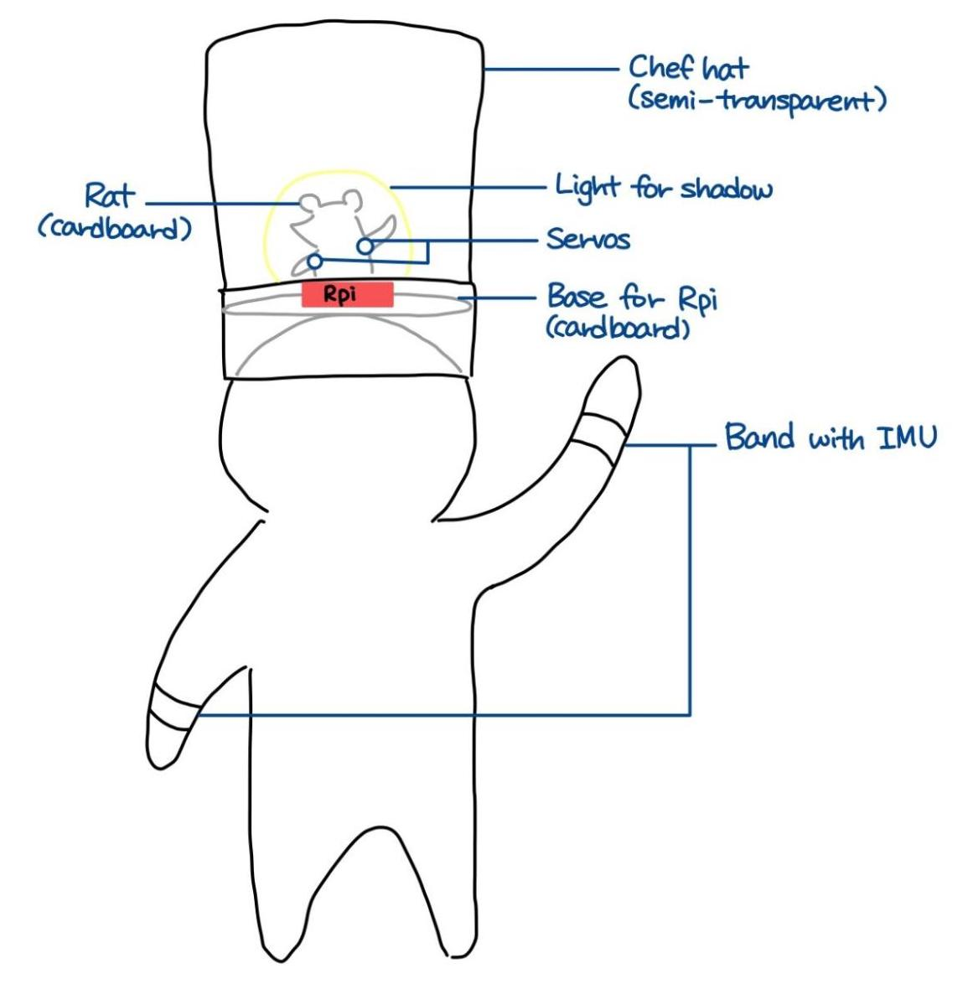

Meet the Chefs

Our project uses embedded operating systems to recreate the classic Ratatouille scene where Remy the rat pulls on Linguini the chef's hair in order to control his arm movements and cook the perfect dish. Instead of being controlled by the rat, our project will allow the rat's silhouette in the hat to mimic the motion of the wearer using servo motors, IMU sensors, and Bluetooth. The goal is to make it seem as if there is a real rat inside the hat controlling the chef's every move!

In the 2007 Pixar film Ratatouille, Remy the rat controls Alfredo Linguini’s hand movements by pulling strands of hair on his head. Hiding underneath Linguini’s chef’s hat, Remy guides the talentless chef to cook up many tasty dishes. As untalented chefs ourselves, we recreated the hat from the movie in hopes of getting the same experience of being controlled by Remy. The chef only needs a few pieces of equipment to start cooking: two wristbands and a chef's hat. As the Bluetooth-connected Raspberry Pi 4 inside the hat receives IMU measurements from the two Raspberry Pi Zeros attached to each of the wristbands, the rat's arm movements will be in sync with those of the chef. The silhouette of the hardworking rat moving its arms will be visible while you are cooking!
We divided the project into 3 distinct components for development and testing: Gyroscopes, Bluetooth, and Servo motors. We individually implemented and tested each of these components to ensure their functionality before incrementally integrating them into our final prototype.
The wristbands are each equipped with an IMU with 6 degrees of freedom. The code we used to read in the measured data from the IMUs can be found in the Code Appendix section. We started by printing the measured data from the IMU to the terminal window, but the values didn't increase or decrease linearly as we expected when turning the IMU about one axis. In addition, the connections between the IMU and the Raspberry Pi 0 data and clock pins was unstable, causing the program to stop by throwing an error.
To debug the data problem, we Googled the manufacturer’s website and found an Arduino version of the code written by the manufacturer. Using an Arduino Uno borrowed from from Professor Skovira, we were able to isolate the problem to our code on the RPi, since the Arduino successfully displayed the angle of the IMU as we expected. We soon realized our error was that the gyroscope measures angular velocity, so we needed to add the following conversion logic to our code. This equation takes the angular velocities about the x-axis and calculates the pitch, which is the degree rotation about the x-axis.
pitch = np.arctan2(accel_data['y'], accel_data['z']) * 180/np.pi
After adding this logic to the code using the Numpy library in Python, the RPi code worked in the same way as the Arduino code. We also found out that the loose connections originated from poorly soldered pins on the IMU, so we resoldered the pins to fix this problem. The measurements became consistent after fixing these issues, and we were able to use these angle measurements in the next parts of our project.
One of the most important and umfamiliar aspects of our project was the bluetooth connections. We first explored the basic bluetooth commands in Linux
using bluetoothctl to make our Raspberry Pi discoverable (discoverable on), pair with other devices (pair on), etc.
Then we downloaded the Blue Dot package and tried to use the sample code to establish
a connection between one of the RPi 0s and the RPi 4. However, we were unable to debug the error message saying that the
bluetooth connection already exists, which persisted even after we turned off the pairing. We consulted with another group (Jonas Funk and Antti Meriluoto)
in our lab; they were also using bluetooth between a RPi 4 and a RPi 0, and they recommended us to use the PyBluez library.
Thanks to them, we were able to use their send/receive code and modify it for our project. Most of the work was done by the Bluez package, so we could
successfully connect the two RPis by including the server address in the send.py file and connecting the server sockets and ports
in the listen.py file. The send.py and listen.py code can be found in the Code Appendix section. The PyBluez package also has its own GUI
to enable bluetooth and connect the devices, which made the setup process much easier.
Next, we merged the IMU measurement code with the bluetooth code so we can send the measured data over bluetooth. The data that were sent from RPi 0 were in the form of a string, and they were converted to floats on the RPi 4 side. We also included a 0.5 second time.sleep() delay to prevent the measurements from being transmitted too quickly, as the servo movements can be less accurate when there are too many values in a short period of time.
Finally, we worked on auto-connecting the two RPis at startup and connecting the two RPi 0s with the RPi 4 at the same time. At first, we thought we would need to include extra lines of code to enable the auto-connect, but we discovered that the devices would connect automatically at startup if they had previously been paired and stayed connected until shutdown. To connect two RPi 0s to one RPi 4, we set up two ports on the RPi 4 and stored the data received from each RPi 0 in a different variable. While working on this part, we faced a small problem where the RPi 4 would sometimes be confused with the two ports working simultaneously and receive multiple values as one long string. Since each value contained a decimal point, it would fail to convert the long string into a float and crash the program. We were able to fix this error by filtering out corrupted data; we simply added a conditional statement so that the variables would only store the value and attempt to convert it to a float if the length of the transmitted string is less than 30 characters.
We used two 9g Micro Servos to rotate the rat's arms. The servos had to be small enough to fit behind the rat's body; they would be part of the shadow otherwise. The servos were positional, so we mapped the angles from the IMUs to be the range [-1, 1] and used the GPIO Zero library to move the servos. We used GPIO pins 13 and 19 on the RPi 4 to drive the servos. We also capped the maximum and minimum angles on the rat's arms to be between -90 and 90 degrees to prevent the arms from making unnatural movements.
We paid extra attention to the construction of the chef’s hat, since our project relied heavily on the visual presentation. We had to be able to clearly see the rat’s silhouette and recognize that it is moving its arms in sync with the chef. For better stability of the hat, we decided to create our own hat rather than buying a premade chef’s hat. We used a paper plate for the base and glued a piece of copy paper around the base to make it look like a chef’s hat. We created two prototypes, and later we found having two hats very helpful, because we had to take all the parts in and out many times to adjust the silhouette, edit something in the code and test it, fix the wiring connections, etc. Since the hat is made of regular copy paper, it was easy to be crumpled; having an extra hat allowed us to present a relatively cleaner-looking project as a result.
The shadow of the rat was cut out of a piece of cardboard. We cut out the rat’s body and arms separately so we can attach the arms onto the servos and make them move. In the movie, Remy the rat pulls Linguini’s hair to control him, but we decided to have our Remy hold a spoon and a knife in each hand. This way, it would be easier for other people to understand that the project was inspired by the movie Ratatouille, and the shadow of the arm movements will be more clearly visible.
We had originally planned to use an LED to generate the shadow on the side of the hat. Since the breadboard and RPi 4 were already inside the hat, we added code to turn on the LED to listen.py. However, when we assembled the hat, we realized that the LED is not bright enough to make the shadow visible. We tried putting three LEDs in parallel to increase the brightness, but it was still not enough, and the silhouette still looked too blurry. We talked about this problem with Prof. Skovira, and he lent us a small flashlight. With the increased brightness, we were able to see the clear shadow of the rat.
In addition, the RPi 0s, IMUs, and portable batteries for the RPi 0s had to be attached to the chef’s arms. We first thought of simply holding a RPi 0 in each hand, but we wanted to make the system look as similar to the movie as possible. We also wanted to hold a knife and a spoon during the demo, so we decided to make wristbands out of cardboards and velcros. By using velcros, we were able to wear and take off the wristbands, and freely adjust the wristbands’ widths when other people wanted to try our project out.
One of the challenges we faced was to balance the hat on the head. With the RPi 4, a breadboard, a portable battery, and a flashlight being placed inside, the hat became much heavier than we had thought. Moreover, the base of the hat was a flat paper plate, which made it even harder to balance on the head. We could have put the hat on a table during the demo, but it would defeat the purpose of this whole project. To make the hat as stable as possible, we attached two strings to the base plate so we can tie them around the chin. We also observed that the coated side of the paper plate is making the hat easier to fall off the head, so we cut out a piece of sponge that we found in the lab and glued it onto the plate to maximize friction. With these additional parts to the hat, we were able to wear the hat during the demo.
One extra component we implmemented was using crontab to automatically start the client and server processes. We connected our RPis to a computer monitor and provided power with power cables when we were coding, but we wanted our system to eventually operate completely wirelessly using portable batteries. To achieve this goal, we needed a program that would automatically run our send.py and listen.py files on the RPis after they are rebooted. We decided to use crontab in Linux for this. Fortunately, we had a chance to learn about and practice using crontab in Lab 4, and were already familiar with it. We began by creating bash scripts that run send.py and listen.py; the bash files can be found in the Code Appendix section. We then tested if the bash scripts were correctly working in a few different directories.
We also included an automatic time-out in our send and listen code, so we can always come back to our code in case any error occurs. If the programs didn't have the time-out feature, they would run forever once rebooted, and it would be more troublesome to debug them. After ensuring that the bash scripts were working properly, we edited the crontabs in the RPis to automatically run the bash scripts. We realized that the bluetooth needed extra time to be set up, so running the bash scripts right at startup did not work. We decided to put a delay before the actual code runs to accommodate this issue.
Going back to our original project goals, we successfully implemented each module within the time frame that we initially set:
In our current system, the server side code consists of a process that terminates and relaunches every 3 minutes using Linux’s crontab feature. A better alternative would be to launch the process once during reboot, as we currently have to wait for up to 3 minutes after startup for the project to start running. We weren’t able to implement starting the process at reboot using the “@reboot” feature in crontab, and we suspect this may be a consequence of the startup sequence of the Bluetooth service relative to other Linux reboot processes. One future task we will implement is to debug this issue and allow our system to start at reboot, which would make for a much more seamless startup sequence.
If given more time, we would also add additional improvements and features to the rat in the hat, such as changing the color of the backlight depending on the actions taken by the chef, adding cooking sounds, and displaying pixel art of various dishes that are shown when the chef makes the corresponding movements with their arms.
Total = ~$180, but thanks to Professor Skovira who lent all the parts from the lab, we did not spend any money on this project.
Complete code hosted on GitHub: https://github.com/tiffanyguo8/ECE5725/tree/main/code
import bluetooth import time from mpu6050 import mpu6050 import numpy as np sensor = mpu6050(0x68) server_address = "DC:A6:32:B4:12:B4" client_socket = bluetooth.BluetoothSocket(bluetooth.RFCOMM) client_socket.connect((server_address,1)) begin_time = time.time() while time.time() < begin_time + 180: try: accel_data = sensor.get_accel_data() gyro_data = sensor.get_gyro_data() temp = sensor.get_temp() pitch = np.arctan2(accel_data['y'], accel_data['z']) * 180/np.pi print(pitch) data = pitch client_socket.send(str(data)) time.sleep(0.5) except bluetooth.btcommon.BluetoothError as error: print("Bluetooth connection error:", error) break client_socket.close()
import bluetooth from gpiozero import Servo import time import struct import RPi.GPIO as GPIO GPIO.setmode(GPIO.BCM) GPIO.setup(12, GPIO.OUT) GPIO.output(12, GPIO.HIGH) servo_left = Servo(13) servo_right = Servo(19) # Create a Bluetooth socket and bind it to a port server_socket1 = bluetooth.BluetoothSocket(bluetooth.RFCOMM) server_socket2 = bluetooth.BluetoothSocket(bluetooth.RFCOMM) server_socket1.bind(("", 1)) server_socket2.bind(("", 2)) # Listen for incoming Bluetooth connections server_socket1.listen(1) server_socket2.listen(2) # Get the port number assigned to the socket port1 = server_socket1.getsockname()[1] port2 = server_socket2.getsockname()[1] # Print the port number to the console print("Waiting for connection on RFCOMM channel", port1) print("Waiting for connection on RFCOMM channel", port2) # Accept an incoming Bluetooth connection client_socket1, client_info1 = server_socket1.accept() print("Accepted connection from", client_info1) client_socket2, client_info2 = server_socket2.accept() print("Accepted connection from", client_info2) # Map gyroscope data to [-1, 1] range and cap values that exceed the max/min. def convert(gyro): if (gyro <= -90): return -1 elif (gyro >= 90): return 1 else: return gyro / 90 # Receive data from the client begin_time = time.time() while time.time() < begin_time + 600: try: data_left = client_socket1.recv(1024) data_right = client_socket2.recv(1024) if data_left: print("Received left:", data_left) if(len(data_left) < 30): data_left = float(data_left) pwm_left = convert(data_left) servo_left.value = pwm_left if data_right: print("Received right:", data_right) if(len(data_right) < 30): data_right = float(data_right) pwm_right = convert(data_right) servo_right.value = pwm_right except bluetooth.btcommon.BluetoothError as error: print("Bluetooth connection error:", error) break # Close the client socket and the server socket client_socket1.close() server_socket1.close() client_socket2.close() server_socket2.close() GPIO.cleanup()
The workload of this projct, including design, testing, and report, was shared evenly between both members.
Stella Han: ch682@cornell.edu
Tiffany Guo: tg382@cornell.edu